from fastai.vision.all import *
from fastai.vision.augment import _gridpath = untar_data(URLs.IMAGENETTE_320)img = Image.open(path.ls()[0].ls()[3].ls()[0])
img = TensorImage(image2tensor(img)[None]/255.)aug_transforms(max_lighting=.99)[1]Brightness -- {'max_lighting': 0.99, 'p': 1.0, 'draw': None, 'batch': False}:
encodes: (TensorImage,object) -> encodes
decodes: show_images(aug_transforms(max_lighting=.99)[1](img.repeat(12,1,1,1)))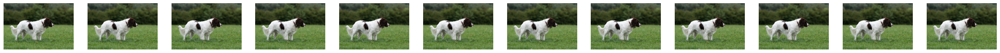
RandTransform
Notice that p, can be set to control the probability of a transform being applied.
class RandTransform(DisplayedTransform):
"A transform that before_call its state at each `__call__`"
do,nm,supports,split_idx = True,None,[],0
def __init__(self,
p:float=1., # Probability of applying Transform
nm:str=None,
before_call:callable=None, # Optional batchwise preprocessing function
**kwargs
):
store_attr('p')
super().__init__(**kwargs)
self.before_call = ifnone(before_call,self.before_call)
def before_call(self,
b,
split_idx:int, # Index of the train/valid dataset
):
"This function can be overridden. Set `self.do` based on `self.p`"
self.do = self.p==1. or random.random() < self.p
def __call__(self,
b,
split_idx:int=None, # Index of the train/valid dataset
**kwargs
):
self.before_call(b, split_idx=split_idx)
return super().__call__(b, split_idx=split_idx, **kwargs) if self.do else bAffine
Fastai has many affine transforms. These include crop, zoom, flip etc. Lets go through some now.
xy_grid.shapetorch.Size([1, 320, 480, 2])def show_grid(xy_grid):
neutral_dim=torch.zeros_like(xy_grid)[...,0,None]
normal_grid=torch.cat((xy_grid,neutral_dim),dim=3)
bad_mask = (normal_grid>1).int() + (normal_grid<-1).int()
bad_mask=-bad_mask.sum(-1)*10
normal_grid+=bad_mask[...,None]
show_images(((normal_grid+1)/2).clip(0,1))y_coords=torch.linspace(-1,1,img.shape[-2])
x_coords=torch.linspace(-1,1,img.shape[-1])
xy_grid=torch.meshgrid(x_coords, y_coords, indexing='xy')
xy_grid=torch.stack(xy_grid,dim=2)[None]
show_grid(xy_grid)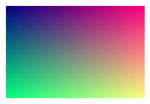
xy_gridtensor([[[[-1.0000, -1.0000],
[-0.9958, -1.0000],
[-0.9916, -1.0000],
...,
[ 0.9916, -1.0000],
[ 0.9958, -1.0000],
[ 1.0000, -1.0000]],
[[-1.0000, -0.9937],
[-0.9958, -0.9937],
[-0.9916, -0.9937],
...,
[ 0.9916, -0.9937],
[ 0.9958, -0.9937],
[ 1.0000, -0.9937]],
[[-1.0000, -0.9875],
[-0.9958, -0.9875],
[-0.9916, -0.9875],
...,
[ 0.9916, -0.9875],
[ 0.9958, -0.9875],
[ 1.0000, -0.9875]],
...,
[[-1.0000, 0.9875],
[-0.9958, 0.9875],
[-0.9916, 0.9875],
...,
[ 0.9916, 0.9875],
[ 0.9958, 0.9875],
[ 1.0000, 0.9875]],
[[-1.0000, 0.9937],
[-0.9958, 0.9937],
[-0.9916, 0.9937],
...,
[ 0.9916, 0.9937],
[ 0.9958, 0.9937],
[ 1.0000, 0.9937]],
[[-1.0000, 1.0000],
[-0.9958, 1.0000],
[-0.9916, 1.0000],
...,
[ 0.9916, 1.0000],
[ 0.9958, 1.0000],
[ 1.0000, 1.0000]]]])show_images(F.grid_sample(img,xy_grid))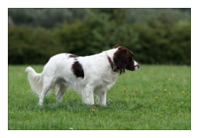
def make_grid(x_coords,y_coords):
xy_grid=torch.meshgrid(x_coords, y_coords, indexing='xy')
xy_grid=torch.stack(xy_grid,dim=2)[None]
return xy_gridy_coords=torch.linspace(-1,1,img.shape[-2])
x_coords=torch.linspace(-1,1,img.shape[-1])
make_grid(y_coords)
show_grid(xy_grid)Slide Left
show_grid(make_grid(x_coords+1,y_coords),)show_images(F.grid_sample(img,make_grid(-1*x_coords,y_coords)))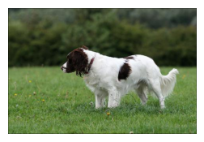
Flip
show_grid(make_grid(-1*x_coords,y_coords),)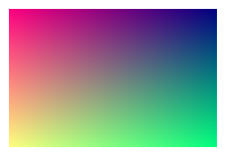
show_images(F.grid_sample(img,make_grid(2.*x_coords,y_coords)))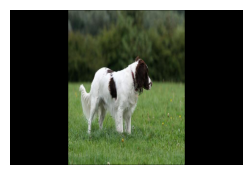
Squish/Resize x dim
show_grid(make_grid(2*x_coords,y_coords),)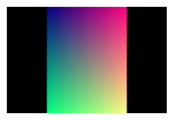
show_images(F.grid_sample(img,make_grid(2*x_coords,y_coords)))y_coords.shapetorch.Size([320])x_coords.shapetorch.Size([480])Why can’t we use the technique we have used to implement rotate/warp?
I mostly introduced the previous techniques to make things easy to understand by making x and y indepentdent, but affine transformations can work off of the current x and y values, which takes a bit more code to implement. Lets jump straight into building these like fastai.
F.affine_grid
Affine grids work on much smaller grids.
translate_grid=torch.tensor([[1.,0,.5],
[0,1,0]])coords_grid=F.affine_grid(translate_grid[None], img.shape)
show_grid(coords_grid)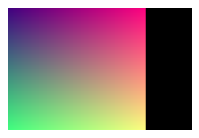
show_images(F.grid_sample(img,coords_grid))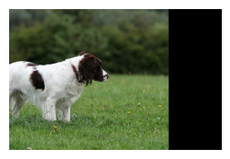
https://en.wikipedia.org/wiki/Affine_transformation
torch.tensor([[1,0,0],
[0,1,0]])tensor([[1, 0, 0],
[0, 1, 0]])torch.tensor([[1.,0,0],
[0,1,0]])tensor([[1., 0., 0.],
[0., 1., 0.]])identity_grid=torch.tensor([[1.,0,0],
[0,1,0]])
coords_grid=F.affine_grid(identity_grid[None], img.shape)
show_grid(coords_grid)
show_images(F.grid_sample(img,coords_grid))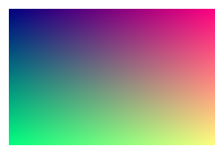
rot_grid=torch.tensor([[math.cos(.5),-math.sin(.5),0],
[math.sin(.5),math.cos(.5),0]])
coords_grid=F.affine_grid(rot_grid[None], img.shape)
show_grid(coords_grid)
show_images(F.grid_sample(img,coords_grid))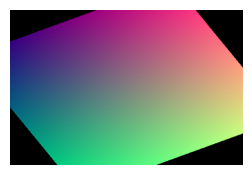
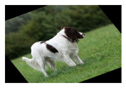
Rotate
math.cos(.5)0.8775825618903728rotate_grid=torch.tensor([[math.cos(1),math.sin(1),0],
[-math.sin(1),math.cos(1),0]])
coords_grid=F.affine_grid(rotate_grid[None], img.shape)
show_grid(coords_grid)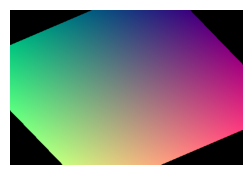
show_images(F.grid_sample(img,coords_grid))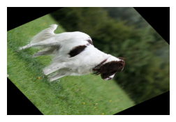
shear_grid=torch.tensor([[1,.5,0],
[0,1,0]])
coords_grid=F.affine_grid(shear_grid[None], img.shape)
show_grid(coords_grid)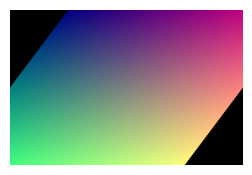
show_images(F.grid_sample(img,coords_grid))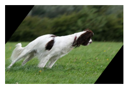
How would we warp/skew?
warp_grid=torch.tensor([[1.,.5,0],
[0,1,0]])
coords_grid=F.affine_grid(warp_grid[None], img.shape)
show_grid(coords_grid)
show_images(F.grid_sample(img,coords_grid))Combining affine augmentations
Lets look at the affine grid identity.
affine_grid=torch.tensor([[1.,0,0],
[0,1,0]])
coords_grid=F.affine_grid(affine_grid[None], img.shape)
show_grid(coords_grid)Does this affine grid identity look familiar? Can you think of a way to combine affine transforms?
Implementation
def combine_affines(affines):
id_row=lambda a:torch.cat((a,torch.tensor([.0,0,1])[None]))
comb_mat=id_row(affines[0])
for a in affines:
comb_mat@=id_row(a)
return comb_mat[:2]wrt_grid=combine_affines([warp_grid,rotate_grid,translate_grid])wrt_gridtensor([[-0.3012, 1.3818, -0.3012],
[-0.8415, 0.5403, -0.8415]])coords_grid=F.affine_grid(wrt_grid[None], img.shape)show_grid(coords_grid)show_images(F.grid_sample(img,coords_grid)),show_images(img)(None, None)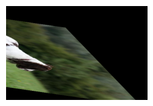
_BrightnessLogit??Object `_BrightnessLogit` not found.Lighting
show_images((img+.4))Clipping input data to the valid range for imshow with RGB data ([0..1] for floats or [0..255] for integers).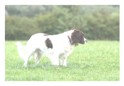
x=TensorImage(torch.tensor([.01* i for i in range(0,101)]))
f_lin= lambda x:(2*(x-0.5)+0.5).clamp(0,1) #blue line
f_log= lambda x:2*x #red line
plt.plot(x,f_lin(x),'b',x,torch.sigmoid(f_log(logit(x))),'r');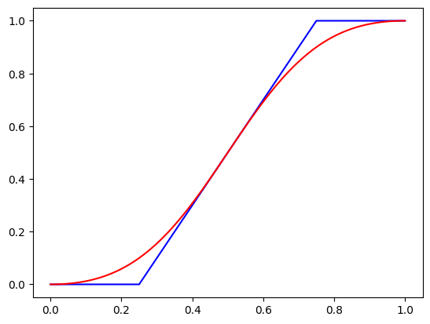
What is special about logit in relationship to sigmoid?
show_images(img+.5)Clipping input data to the valid range for imshow with RGB data ([0..1] for floats or [0..255] for integers).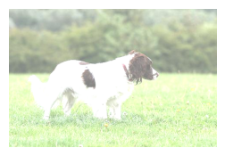
show_images(torch.sigmoid(logit(img)+logit(torch.tensor(.85))))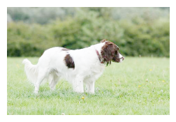
show_images(img)logit??How to do contrast?
show_images(torch.sigmoid(logit(img)*4))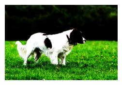
Next Section
Open other notebook